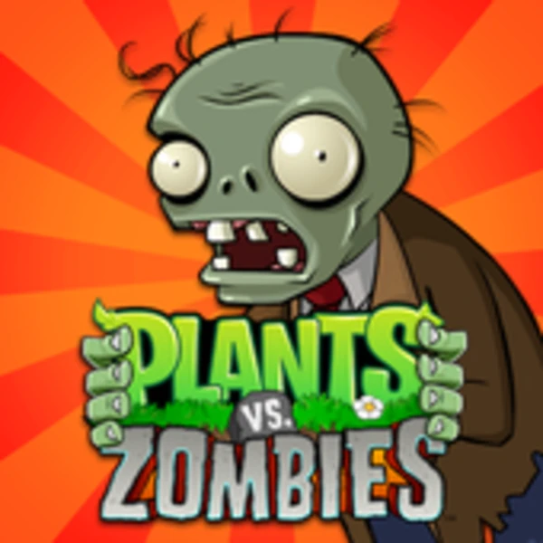

Origem
A franquia foi criada pela PopCap Games e lançada em 2009 para PC. O sucesso foi imediato e o jogo rapidamente expandiu para celulares, consoles e outras plataformas.
Em 2011, a Electronic Arts comprou a PopCap e passou a controlar a marca.
Uma franquia de estratégia com identidade muito forte: simples de entender, difícil de dominar e cheia de personalidade. A graça está justamente na combinação entre humor, leitura de campo e tomada de decisão rápida.

A franquia foi criada pela PopCap Games e lançada em 2009 para PC. O sucesso foi imediato e o jogo rapidamente expandiu para celulares, consoles e outras plataformas.
Em 2011, a Electronic Arts comprou a PopCap e passou a controlar a marca.
O enredo é propositalmente simples e cômico: zumbis tentam invadir sua casa para comer seu cérebro, e você responde posicionando plantas no jardim para barrar o avanço.
Crazy Dave é o vizinho excêntrico que ajuda o jogador, enquanto Dr. Zomboss funciona como o grande antagonista.
Durante a campanha, você passa por cenários que mudam bastante a leitura das fases: dia, noite, piscina, neblina e telhado.
Além da campanha principal, a série inclui modos como Survival, Puzzle, I, Zombie, Vasebreaker, Minigames e Zen Garden.
A trilha sonora ficou marcada entre os fãs, e a música There's a Zombie on Your Lawn virou um símbolo da franquia.
O jogo ajudou a popularizar o tower defense para um público muito maior, porque equilibra acessibilidade e profundidade tática sem ficar artificialmente complicado.
O mérito real de Plants vs. Zombies não é só o humor. É o design: regras fáceis de entender, feedback visual claro e dificuldade crescendo na medida certa. Isso cria um jogo que qualquer um consegue começar — mas poucos jogam de forma realmente eficiente.